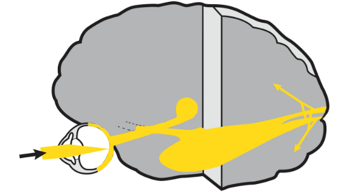
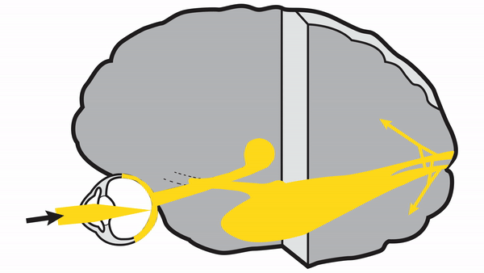
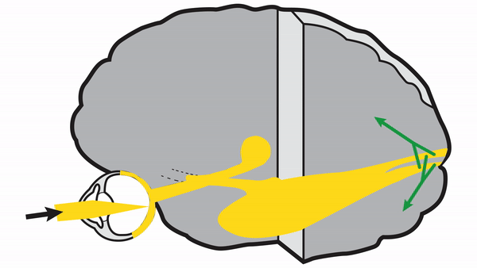

Vision Pathways Overview

- Optical Segment: focuses light on the retina using the refractive powers of the cornea and lens
- Retinocortical Segment: transduces light into neural signals that travel through the retina, optic nerve, optic chiasm, optic tracts, lateral geniculate bodies, and optic radiations to primary visual cortex
- Perceptual Segment: dorsal perceptual stream carries signal to parietal vision-associated cerebral cortex for visuospatial and attentional vision; ventral perceptual stream carries signal to temporal vision-associated cerebral cortex to allow recognition of viewed material



- Optical segment: uncorrected refractive errors and media opacities or irregularities produce unclear vision (but never scotomas!)
- Retinocortical segment: lesions anywhere from the retina to visual cortex produce visual field defects whose shape often allows localization of lesion within this segment
- Perceptual segment: lesions of occipital-parietal stream produce deficits in visuospatial and attentional function; lesions of occipital-temporal stream produce deficits in visual recognition